Diseño lógico y simulación de un parqueo automatizado de tres niveles · Electrónica Digital · Proyecto final
12 espacios3 niveles × 44 módulosReloj 1 HzFlip-Flops D
1
Carátula y roles
Universidad
Universidad Mariano Gálvez de Guatemala
Curso
Electrónica Digital
Proyecto
Park-Tech GT: control y simulación de un parqueo automatizado de 3 niveles
Fecha
Octubre de 2026
Distribución de roles por pieza
Pieza
Módulo
Responsable
1
Detección, conteo y disponibilidad general
Emilio García (0900-23-15301)
2
Gestión y señalización por niveles
Equipo Park-Tech GT
3
Extracción y ventilación de emergencia por CO2
Cristian Alexander González Castillo
4
Integración, reloj y simulación general
Emilio García y equipo
Herramienta de simulación
Logisim-evolution 3.9 (compatible con 5.0). La sección 7.3 del enunciado admite Logisim para el archivo integrado. La primera versión de la Pieza 2 se hizo en Livewire (archivo FASE2_PROYECTO.lvw). Para integrar las cuatro piezas en un solo archivo, esa pieza se reconstruyó en Logisim con la misma estructura: tres Flip-Flops D por nivel.
2
Presentación del proyecto
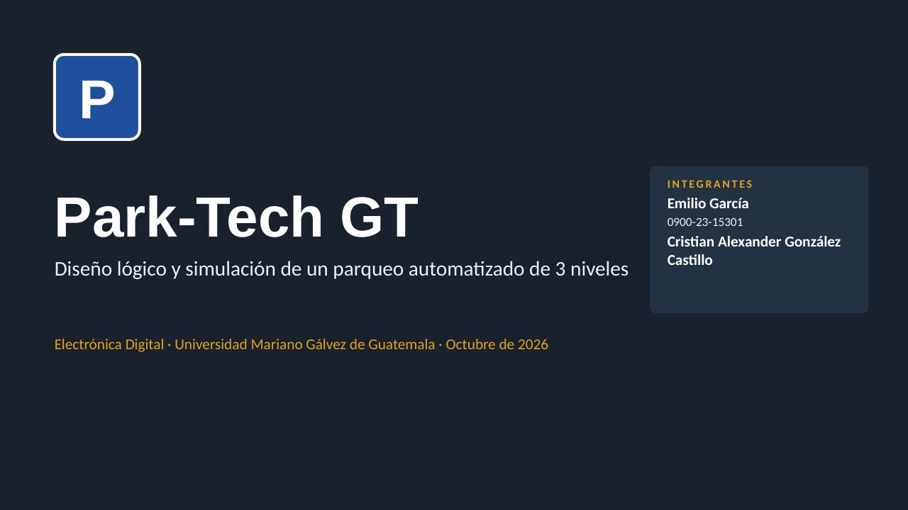
1 / 12
Las 12 diapositivas que se usaron en la exposición. La demostración en vivo se hizo sobre el archivo integrado de Logisim (diapositiva 10). La presentación editable, con notas del orador, está en la sección Archivos.
▶
Simulador del sistema
Este modelo reproduce en el navegador las mismas ecuaciones de los cuatro módulos. Cada botón equivale a un evento de sensor ya acondicionado por la Pieza 4, es decir, un pulso de un ciclo de CLKSINC. La simulación oficial es el archivo de Logisim de la sección 7.
Panel maestro
CLKSINC 1 Hz
MELLENO
Conteo global: 0 / 12 · Q3..Q0 = 0000
Tablero de entrada
IR N1IR N2IR N3SIN ESPACIO
Ventilación
V1 bajaV2 altaALARMA
Vehículos
Sensores de CO2 y presencia
Casos de prueba
Sistema en reset: 0 vehículos. Presioná "Llega un carro".
3
Memoria de cálculo por módulo
Los cuatro módulos respetan el mismo contrato de señales, y todos los Flip-Flops son tipo D, activos en el flanco de subida de CLKSINC. Los sensores físicos entran únicamente a la Pieza 4. Las Piezas 1 y 2 reciben pulsos limpios que duran un solo ciclo, y la Pieza 3 es combinacional.
Pieza 1 · Detección, conteo y disponibilidad general
Responsable: Emilio García · Archivo: pieza1_conteo_global.circ
Señal
Tipo
Significado
PE, PS
Entrada
Pulso de 1 ciclo cuando un vehículo pasa por el sensor de entrada o de salida (viene de la Pieza 4)
SE
Entrada
Sensor de entrada limpio, en nivel (vehículo presente)
R, CLKSINC
Entrada
Reset general (asíncrono a 0) y reloj sincronizado de 1 Hz
Q3..Q0
Salida
Conteo global en binario (0000 a 1100), que alimenta el display
ME, LLENO
Salida
Motor de la talanquera de entrada (1 = abrir) y luz roja de capacidad máxima
Pregunta guía 1 · Tabla de estados del contador ascendente/descendente 0–12
Se usan cuatro Flip-Flops D, porque 12 necesita 4 bits. La variable de sentido es M = PE (1 = sube, 0 = baja). El contador solo cambia cuando la habilitación EN vale 1. Los estados 13, 14 y 15 nunca se alcanzan y se toman como no importa (X), igual que "subir desde 12" y "bajar desde 0", que EN bloquea.
Estado
Q3 Q2 Q1 Q0
Siguiente si sube (M=1)
Siguiente si baja (M=0)
0
0000
0001
X (bloqueado: CERO)
1
0001
0010
0000
2
0010
0011
0001
3
0011
0100
0010
4
0100
0101
0011
5
0101
0110
0100
6
0110
0111
0101
7
0111
1000
0110
8
1000
1001
0111
9
1001
1010
1000
10
1010
1011
1001
11
1011
1100
1010
12
1100
X (bloqueado: LLENO)
1011
13–15
1101–1111
X
X
En un Flip-Flop D, la entrada de excitación es igual al estado siguiente (D = Q⁺). Por eso las columnas "siguiente" de la tabla son directamente los valores que deben tomar D3..D0.
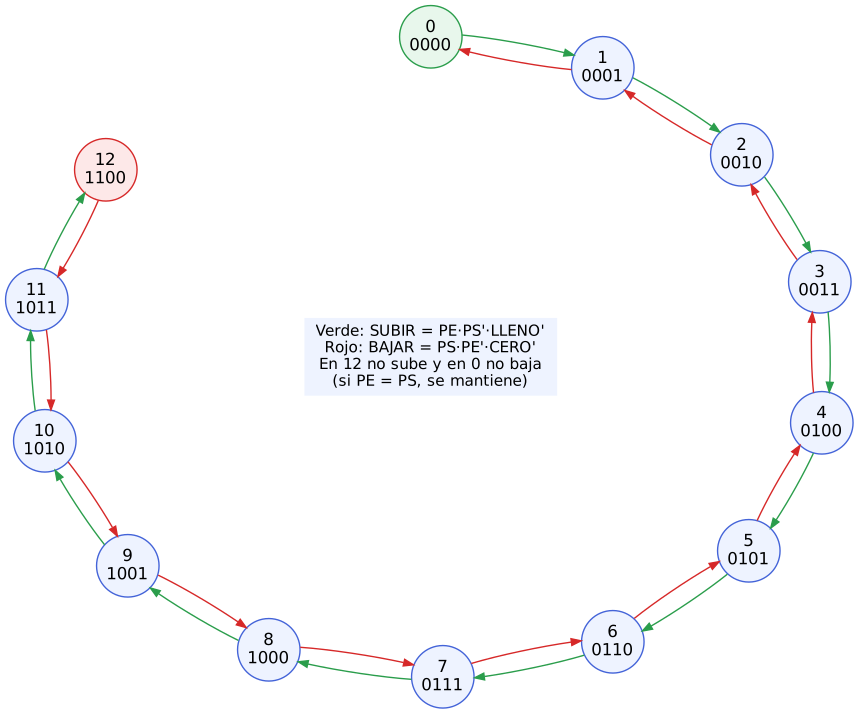
Figura 1. Diagrama de transición de estados del contador global.
Lógica de control (habilitación y saturación)
LLENO = Q3·Q2 (12 = 1100; los estados 13–15 son X)
CERO = Q3'·Q2'·Q1'·Q0'
SUBIR = PE·PS'·LLENO'
BAJAR = PS·PE'·CERO'
EN = SUBIR + BAJAR M = PE
Si llegan PE y PS en el mismo ciclo, EN = 0 y el conteo no cambia: entró un carro y salió otro.
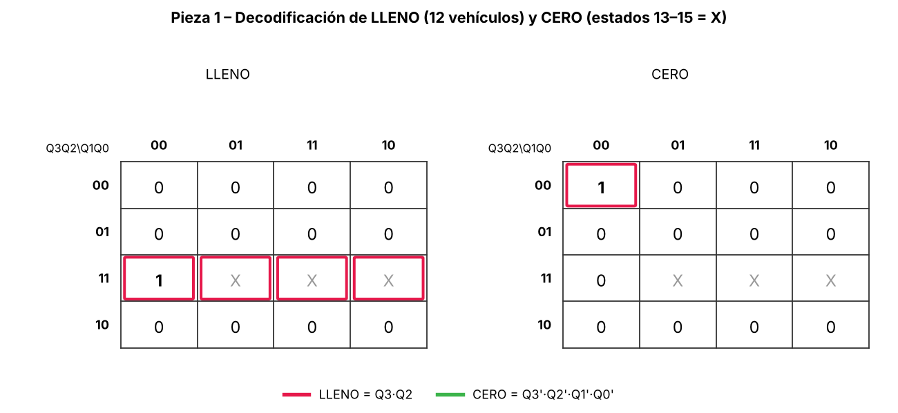
Figura 2. LLENO aprovecha los estados 13–15 como "no importa" y queda en un solo término.
Pregunta guía 2 · Mapas de Karnaugh de las entradas de excitación
Cada función de siguiente estado F = f(Q3, Q2, Q1, Q0, M) tiene 5 variables. El mapa se arma con dos mapas de 4 variables, uno para M = 0 y otro para M = 1. Las celdas en la misma posición de ambos mapas son adyacentes.
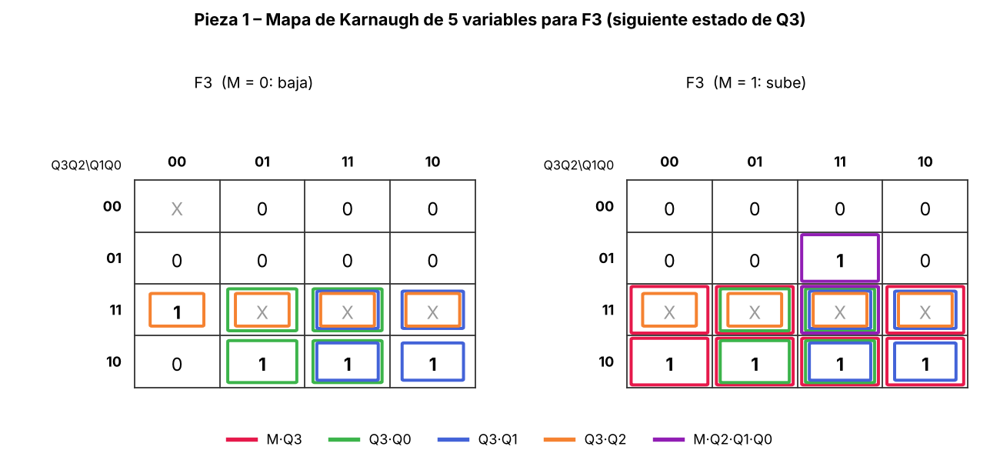
Figura 3. F3 (bit más significativo).
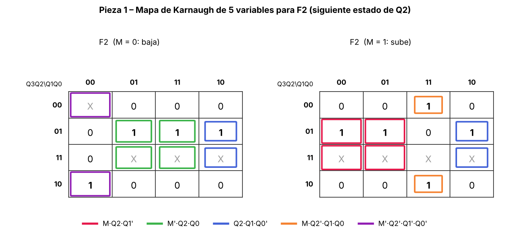
Figura 4. F2.
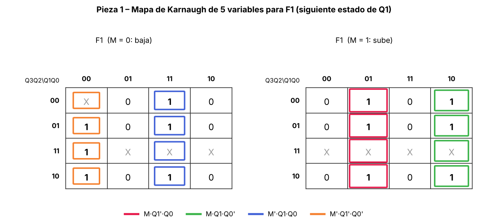
Figura 5. F1.F3 = M·Q3 + Q3·Q0 + Q3·Q1 + Q3·Q2 + M·Q2·Q1·Q0
F2 = M·Q2·Q1' + M'·Q2·Q0 + Q2·Q1·Q0' + M·Q2'·Q1·Q0 + M'·Q2'·Q1'·Q0'
F1 = M·Q1'·Q0 + M·Q1·Q0' + M'·Q1·Q0 + M'·Q1'·Q0' = M ⊙ (Q1 ⊕ Q0)
F0 = Q0' (el bit 0 siempre cambia)
Como el Flip-Flop D no tiene entrada de habilitación, cada bit se retiene con un multiplexor de 2 a 1 hecho con compuertas. Así, cuando no hay evento, D = Q y el estado se mantiene:
Di = EN·Fi + EN'·Qi (i = 0..3)
Esta es la causa típica de que un contador con FF D "siga sumando solo": sin el término EN'·Q, el FF toma F en cada flanco de reloj.
Pregunta guía 3 · Ecuación de la talanquera de entrada
ME = SE · LLENO'
La talanquera abre solo si hay un vehículo frente al sensor de entrada y el parqueo no está lleno. Con LLENO = 1, el factor LLENO' vale 0 y fuerza ME = 0, sin importar el sensor.
Display de 7 segmentos
Las salidas Q3..Q0 se unen en un bus de 4 bits (Q0 es el bit menos significativo) que entra a un display hexadecimal. Muestra de 0 a 9, y A, b, C para 10, 11 y 12. El enunciado admite hexadecimal o decimal.
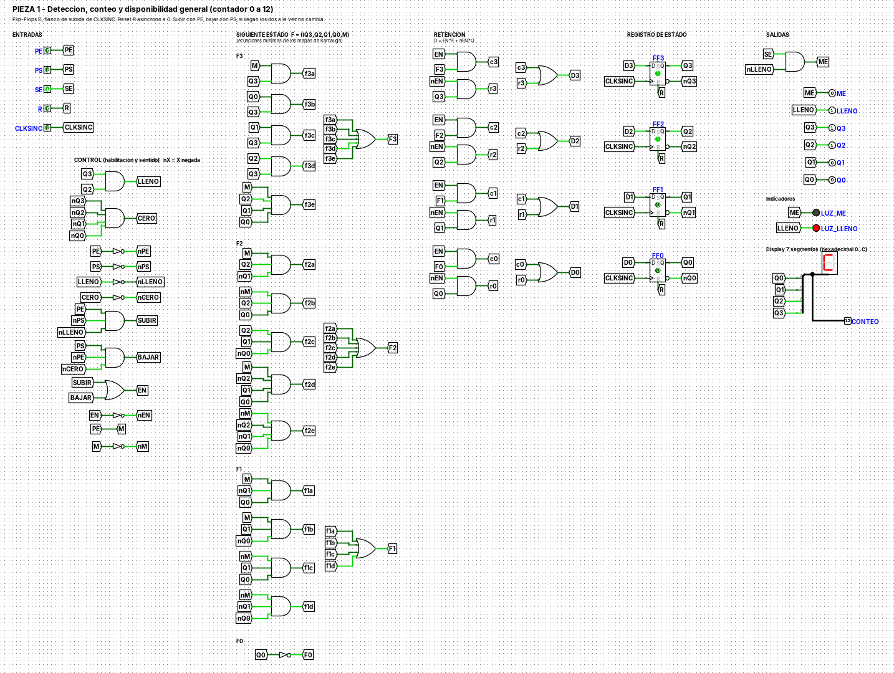
Figura 6. Pieza 1 en Logisim durante la pregunta integradora: estado 1100, LLENO encendido y display en C.
Pieza 2 · Gestión y señalización por niveles
Responsable: Equipo Park-Tech GT · Archivo: pieza2_niveles.circ (original en Livewire: FASE2_PROYECTO.lvw)
Cada nivel tiene 4 espacios y su propio contador de 0 a 4, en el subcircuito ContadorNivel, que se repite tres veces. El enunciado define un solo sensor SNx por nivel. Como un solo sensor no indica la dirección del vehículo, se interpreta como dos señales: SUBx (entra al nivel) y BAJx (sale del nivel), ya limpias por la Pieza 4.
Pregunta guía 1 · Contador del nivel con Flip-Flops D
Se usan 3 Flip-Flops D (Q2 Q1 Q0), con M = SUB. Los estados 5, 6 y 7 son "no importa".
Estado
Q2 Q1 Q0
Sube (M=1)
Baja (M=0)
VERDE
ROJO
DISP
0
000
001
X
1
0
1
1
001
010
000
1
0
1
2
010
011
001
1
0
1
3
011
100
010
1
0
1
4
100
X
011
0
1
0
5–7
101–111
X
X
X
X
X
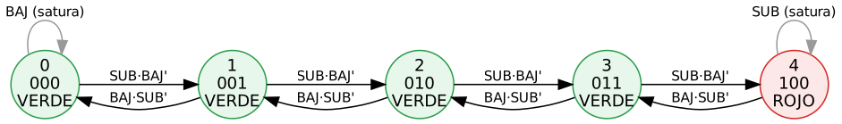
Figura 7. Diagrama de transición de estados del contador de nivel (0 a 4).CERO = Q2'·Q1'·Q0'
SUBIR = SUB·BAJ'·Q2' (no sube si el nivel está lleno)
BAJAR = BAJ·SUB'·CERO' (no baja de 0)
EN = SUBIR + BAJAR M = SUB
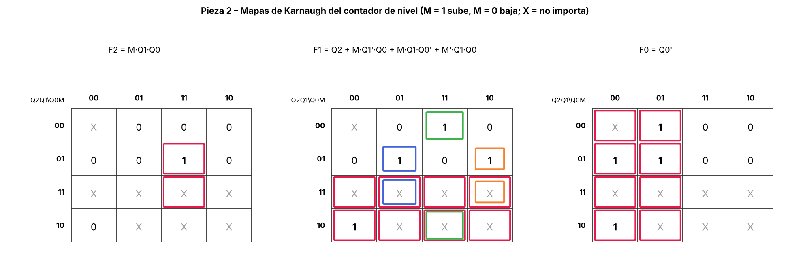
Figura 8. Mapas de Karnaugh del siguiente estado del contador de nivel.F2 = M·Q1·Q0
F1 = Q2 + M·Q1'·Q0 + M·Q1·Q0' + M'·Q1·Q0
F0 = Q0'
Di = EN·Fi + EN'·Qi
Pregunta guía 2 · Decodificación de ROJON, VERDEN y DISPN
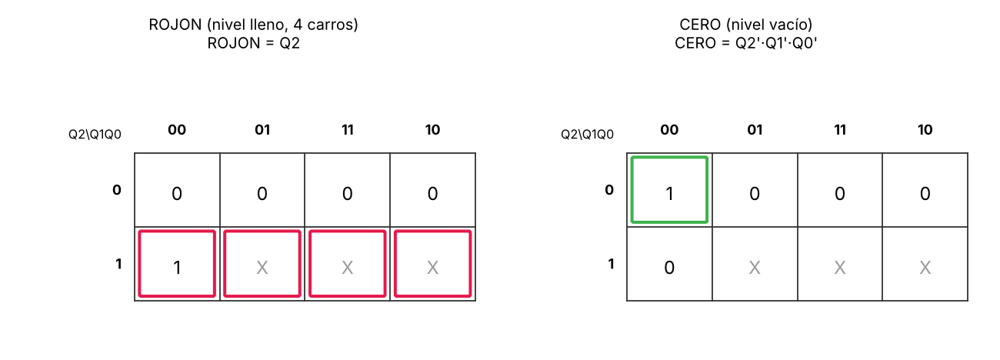
Figura 9. Gracias a los estados 5–7 marcados como X, ROJON se reduce a una sola variable.ROJONx = Q2 (el nivel tiene 4 vehículos)
VERDENx = Q2'
DISPNx = Q2' (1 = menos de 4 vehículos)
Pregunta guía 3 · Tablero de la entrada principal
El tablero recibe DISPN1..3 y enciende una sola flecha: la del nivel libre más bajo. Así el conductor llega directo a un espacio libre sin recorrer niveles llenos. Si ningún nivel tiene espacio, se enciende "SIN ESPACIO", que coincide con LLENO de la Pieza 1.
Figura 10. ContadorNivel del nivel 1 con 4 vehículos (100): ROJO = 1.
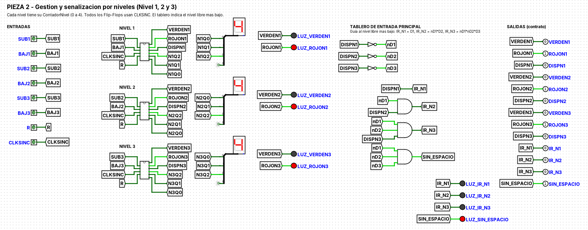
Figura 11. Pieza 2 con los tres niveles llenos: los tres rojos encendidos y SIN_ESPACIO = 1.
Pieza 3 · Extracción y ventilación de emergencia por CO2
Responsable: Cristian Alexander González Castillo · Archivo: Pieza3_Ventilacion.circ
Es un circuito puramente combinacional: no usa Flip-Flops ni CLKSINC. Por eso sus salidas responden en cuanto cambian los sensores y no dependen de ninguna otra pieza. Llamamos N al número de sensores que detectan gas.
Condición
V1
V2
ALARMA
Origen
N = 0
0
0
0
Enunciado
N = 1 o 2 y PGLOB = 1
1
0
0
Enunciado
N = 1 y PGLOB = 0
0
0
0
Enunciado
N = 2 y PGLOB = 0
0
0
0
Criterio del equipo: V1 exige PGLOB = 1
N ≥ 3
0
1
1
Enunciado; V1 = 0 porque la velocidad alta reemplaza a la baja
Pregunta guía 1 · Tabla de verdad (5 variables)
Orden de variables: m = 16·C1 + 8·C2 + 4·C3 + 2·C4 + PGLOB. Las 32 filas completas están en la memoria original de la pieza. En forma de mintérminos:
Pregunta guía 2 · Mapas de Karnaugh de 5 variables
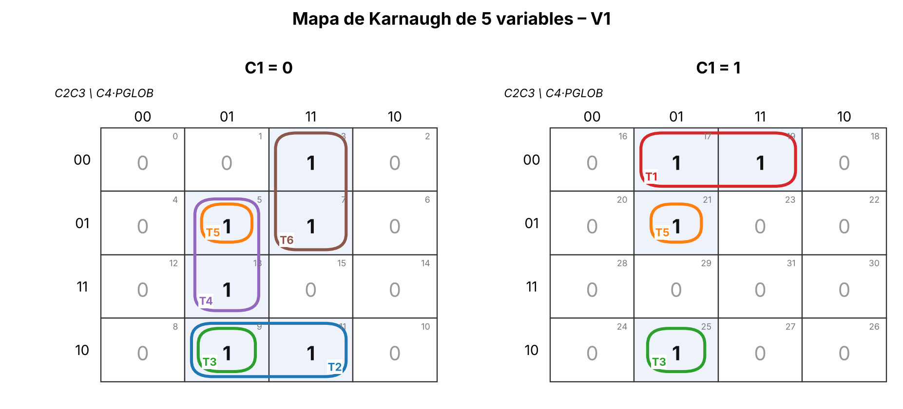
Figura 12. V1: seis grupos de 2 celdas (T1 a T6). No hay grupos de 4, porque todos los unos tienen PGLOB = 1 y N = 1 o 2.
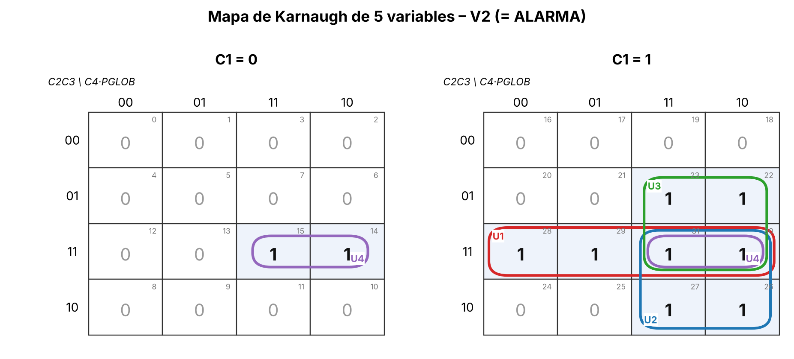
Figura 13. V2 (= ALARMA): cuatro grupos de 4 celdas (U1 a U4).V1 = PGLOB·(C1·C2'·C3' + C1'·C2·C3' + C2·C3'·C4' + C1'·C3·C4' + C2'·C3·C4' + C1'·C2'·C4)
V2 = C1·C2·C3 + C1·C2·C4 + C1·C3·C4 + C2·C3·C4
ALARMA = V2
Pregunta guía 3 · Demostración con álgebra de Boole
Para V2 se parte de la suma canónica. Primero se juntan los pares que solo cambian en PGLOB (complemento: X + X' = 1). Después, por idempotencia, se repite el término C1C2C3C4 y se combina con cada uno de los otros:
Para V1 se hace lo mismo con los pares m17+m19, m9+m11, m9+m25, m5+m13, m5+m21 y m3+m7 (m9 y m5 se usan dos veces), y salen los seis términos T1 a T6. Cada término es una compuerta AND del circuito y la suma es la OR de salida. La tabla de verdad de Logisim coincide con la tabla teórica en las 32 combinaciones; el equipo la volvió a comprobar en el archivo integrado.
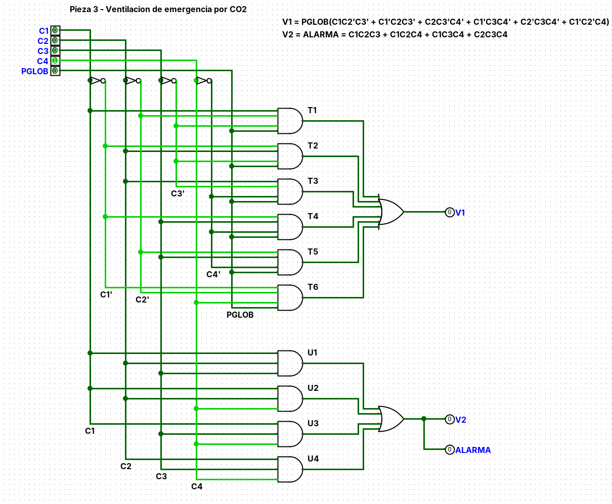
Figura 14. Caso B: C4 = 1 y PGLOB = 0, todo apagado.
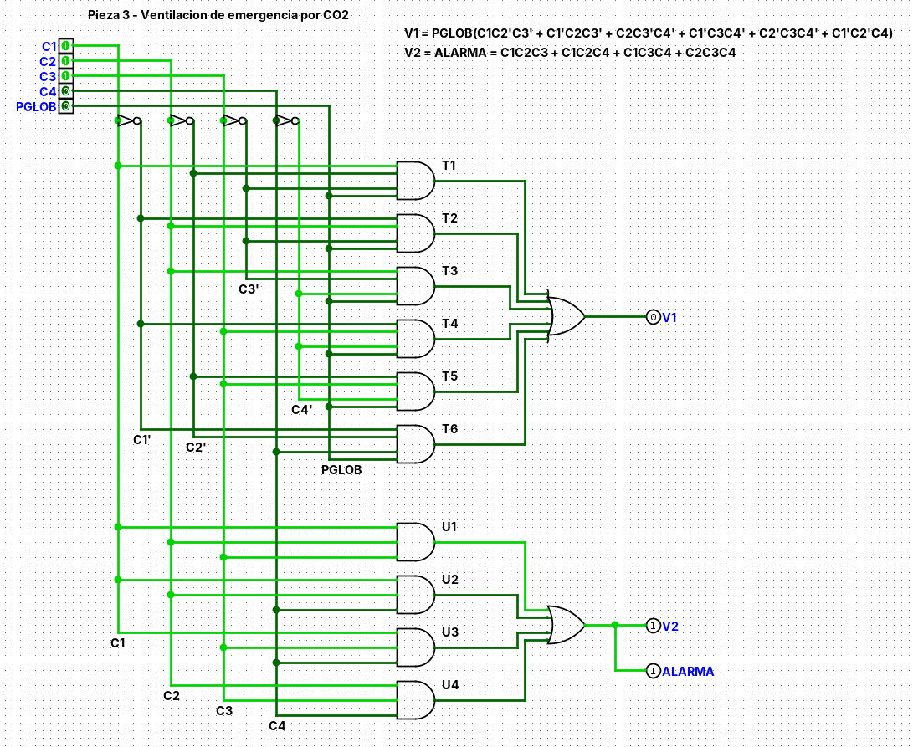
Figura 15. En el sistema integrado, C1 = C2 = C3 = 1 activa U1, y con eso V2 = ALARMA = 1.
Pieza 4 · Integración, reloj y simulación general
Responsable: Emilio García · Archivo: pieza4_reloj_integracion.circ
Cada sensor físico pasa por el subcircuito ACONDICIONADOR, que hace tres cosas en orden: antirrebote, sincronización con el reloj y detección de flanco. Salen niveles limpios (SE) y pulsos de un ciclo (PE, PS, SUBx, BAJx).
Reloj CLKSINC
Un solo generador de reloj de 1 Hz alimenta a todos los Flip-Flops del sistema, que disparan en el mismo flanco de subida. En Logisim, el componente Clock cambia en cada tic, así que la frecuencia de tic se configura en 2 Hz para obtener 1 Hz.
Pregunta guía 1 · Antirrebote con latch SR de compuertas NAND
El sensor se modela como un contacto de dos posiciones: NO (vehículo presente) y NC (libre). Las entradas se invierten (S' = NO', R' = NC') y entran a dos NAND cruzadas. Mientras el contacto rebota, ninguna de las dos posiciones está activa, y el latch conserva su valor.
A⁺ = QL (FF A: sincroniza el sensor con CLKSINC → nivel limpio SE)
B⁺ = A (FF B: el mismo valor, un ciclo después)
PULSO = A·B' (1 solo en el primer ciclo en que el vehículo aparece)
Sin este detector, un vehículo que se queda 3 segundos frente al sensor sumaría 3 veces a 1 Hz. Con el detector suma una sola vez. En la simulación, un carro detenido 5 ciclos frente a SE incrementa el conteo exactamente en 1.
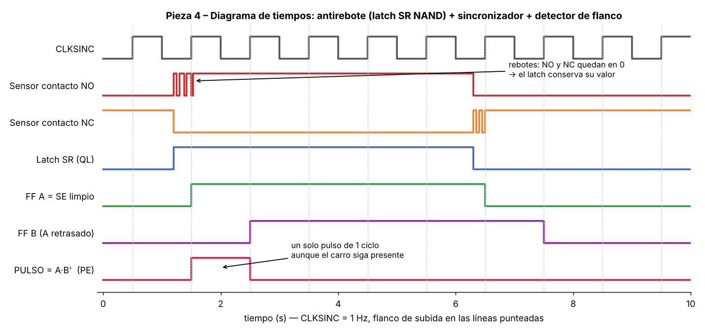
Figura 16. Diagrama de tiempos: los rebotes no pasan del latch, y el pulso dura un ciclo de reloj.
Pregunta guía 2 · ¿Cómo se evitan las carreras de datos?
Un solo reloj y un solo flanco. Todos los Flip-Flops de las Piezas 1, 2 y 4 reciben CLKSINC y disparan en el flanco de subida. No se usan relojes derivados ni compuertas en la línea de reloj, que provocarían desfases (clock skew).
Entradas sincronizadas. Ningún sensor llega directo a un contador. Primero pasa por FF A, así que los contadores solo ven señales que cambian justo después de un flanco y tienen el ciclo completo para estabilizarse.
Pulsos de un ciclo.PE, PS, SUBx, BAJx duran exactamente un periodo, y cada evento se cuenta una sola vez.
Conflictos resueltos por lógica. Si PE y PS llegan en el mismo ciclo, EN = 0 y el conteo se mantiene.
La ventilación no depende del reloj. La Pieza 3 es combinacional, así que sus salidas no esperan un flanco.
Pregunta guía 3 · Panel de control central
El archivo integracion_parktech.circ carga las cuatro piezas como bibliotecas. El panel tiene interruptores para los 8 sensores de paso, el reset, los 4 sensores de CO2 y PGLOB. Como indicadores muestra los LEDs de ME y LLENO, el display del conteo, los semáforos por nivel, el tablero y la ventilación, además de salidas de prueba con el valor de cada señal.
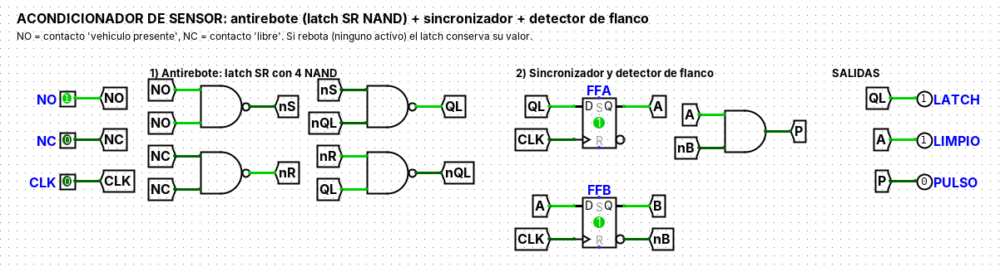
Figura 17. ACONDICIONADOR del sensor de entrada, con un vehículo presente.
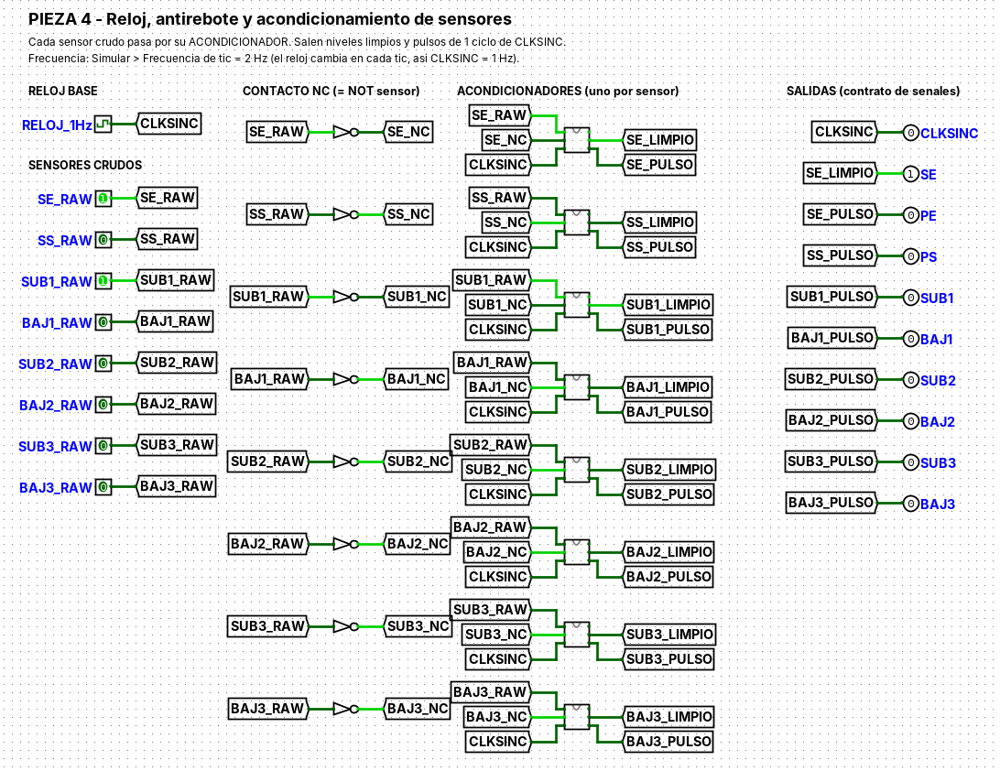
Figura 18. Pieza 4: reloj y ocho acondicionadores.
4
Arquitectura integrada
El diagrama muestra cómo se conectan los cuatro módulos y cómo se distribuye el reloj. Las líneas punteadas son CLKSINC. La Pieza 3 no recibe reloj.
Contrato de señales
Señal
La produce
La usa
Descripción
CLKSINC
Pieza 4
Piezas 1, 2 y 4
Reloj único de 1 Hz, flanco de subida
PE, PS, SE
Pieza 4
Pieza 1
Pulsos de entrada y salida, y nivel del sensor de entrada
SUB1..3, BAJ1..3
Pieza 4
Pieza 2
Pulsos de 1 ciclo: un vehículo sube o baja de cada nivel
R
Panel
Piezas 1 y 2
Reset general a 0
Q3..Q0, ME, LLENO
Pieza 1
Panel
Conteo, talanquera y luz de lleno
VERDENx, ROJONx, DISPNx, IR_Nx
Pieza 2
Panel
Semáforos, disponibilidad y tablero
C1..C4, PGLOB → V1, V2, ALARMA
Panel → Pieza 3
Panel
Ventilación de emergencia
5
Pregunta integradora
Situación: un vehículo entra al Nivel 1 (SN1 se activa), el contador global marca 12 (LLENO = 1) y al mismo tiempo se activan los sensores de gas C1, C2 y C3.
Análisis teórico
Salida
Estado
Justificación
ME
0
ME = SE·LLENO'. Con LLENO = 1, el factor LLENO' vale 0 y la talanquera queda cerrada aunque haya un vehículo en el sensor.
VERDEN1
0
Con 12 vehículos, los tres niveles tienen 4, así que el nivel 1 está en 100: ROJON1 = Q2 = 1 y VERDEN1 = Q2' = 0. El pulso SUB1 no cambia el contador porque SUBIR = SUB·BAJ'·Q2' = 0 (saturación).
V2
1
N = 3: el término C1·C2·C3 (U1) vale 1, sin importar PGLOB.
ALARMA
1
Misma ecuación que V2.
V1
0
Con 3 o más sensores solo trabaja la velocidad alta.
¿Por qué responde de forma síncrona sin bloquear la ventilación?
Las Piezas 1 y 2 solo cambian en el flanco de subida de CLKSINC, y como están saturadas (en 12 y en 4) se mantienen en ese estado. La Pieza 3 no comparte ninguna señal con los contadores ni con el reloj. V2 y ALARMA se activan con el puro retardo de las compuertas, en el mismo instante en que cambian los sensores, sin esperar un flanco. En la simulación, los valores fueron idénticos justo al activar los sensores (antes de cualquier flanco) y después de 3 ciclos de reloj:
Momento
CONTEO
ME
LLENO
VERDEN1
ROJON1
V1
V2
ALARMA
Antes del escenario (3 niveles llenos)
12
0
1
0
1
0
0
0
Al activar SE, SN1 y C1–C3 (sin flanco)
12
0
1
0
1
0
1
1
Después de 3 ciclos de CLKSINC
12
0
1
0
1
0
1
1
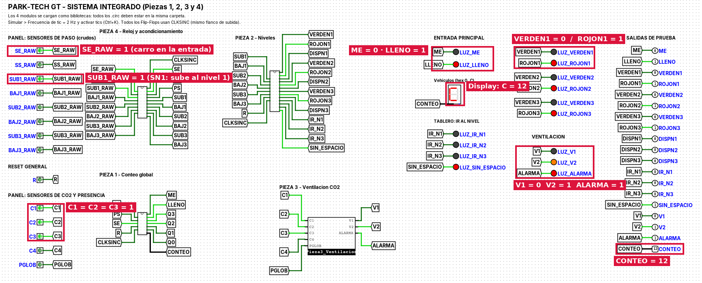
Figura 19. Sistema integrado en Logisim durante la pregunta integradora, con las salidas marcadas.
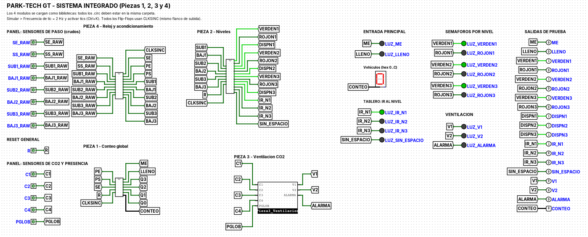
Figura 20. Caso límite: después del reset (0 vehículos, el tablero indica el nivel 1).
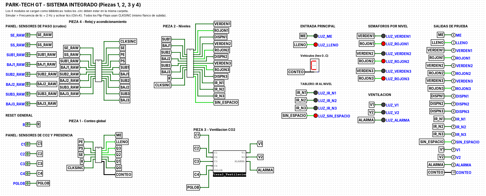
Figura 21. Caso límite: 12 vehículos (LLENO, los 3 rojos y SIN ESPACIO).
Otros casos límite verificados
Un vehículo detenido 5 ciclos frente al sensor de entrada cuenta 1 vez.
14 entradas seguidas: el contador se queda en 12; 14 salidas seguidas: se queda en 0.
Entrada y salida en el mismo ciclo: el conteo no cambia.
Rebote del sensor (NO y NC en 0): el latch conserva su valor.
Pieza 1: 431 ciclos aleatorios comparados con un modelo de referencia, sin errores. Pieza 2: 327 ciclos, sin errores. Pieza 4: 600 ciclos, sin errores. Pieza 3: las 32 combinaciones correctas.
6
Conclusiones y recomendaciones
Conclusiones
Módulos independientes
Las cuatro piezas se diseñaron y probaron por separado y funcionaron juntas al primer intento de integración, porque los nombres y el significado de cada señal se acordaron desde el inicio.
Un solo reloj
Todos los Flip-Flops D de las Piezas 1, 2 y 4 cambian en el mismo flanco de CLKSINC. No hay relojes derivados ni desfases entre módulos.
Sensores confiables
El acondicionador (latch SR, sincronizador y detector de flanco) hace que cada vehículo se cuente una sola vez, aunque el sensor rebote o el carro se quede detenido.
Secuencial y combinacional
La pregunta integradora lo demuestra: los contadores esperan el flanco del reloj, mientras que la ventilación reacciona en el mismo instante en que cambian los sensores.
Recomendaciones
Mantener el acondicionador en cada sensor físico. Al llevar el diseño a hardware, conviene usar sensores con contacto NO y NC (o sensores ópticos con salida digital) y conservar el antirrebote, para que el conteo no se altere por ruido o por un carro detenido.
Reiniciar el sistema al encenderlo. Activar R al arrancar para que todos los contadores partan de un estado conocido (0 vehículos y los tres niveles en verde).
No colocar compuertas en la línea de reloj. Cualquier ampliación debe usar el mismo CLKSINC y habilitar los Flip-Flops con lógica en la entrada D (como la retención D = EN·F + EN'·Q), nunca cortando el reloj.
Mostrar el conteo en decimal para el usuario final. El display hexadecimal muestra 10, 11 y 12 como A, b y C. En una versión física se recomienda un convertidor binario a BCD y dos displays de 7 segmentos para que el conductor lea “12”.
Agregar un tiempo mínimo de ventilación. La Pieza 3 apaga los extractores en cuanto bajan los sensores. Un temporizador o una histéresis en el umbral de CO2 evitaría que los ventiladores se enciendan y apaguen muchas veces seguidas.
Escalar por módulos. Para agregar un cuarto nivel basta con otro ContadorNivel y extender el tablero con la misma regla de prioridad (IR_N4 = DISPN1'·DISPN2'·DISPN3'·DISPN4), y ampliar el contador global.
Probar cada pieza antes de integrar. La simulación por separado de cada módulo (más de 1,300 ciclos y las 32 combinaciones de CO2, sin errores) fue lo que permitió una integración sin fallas. Se recomienda repetir esas pruebas después de cualquier cambio.
Abrir la simulación con todos los archivos juntos. El archivo integrado carga las cuatro piezas como bibliotecas, así que los cinco archivos .circ deben estar en la misma carpeta.
7
Archivos del proyecto
Simulación · Logisim
Sistema integrado, las cuatro piezas, LEEME y la versión original de la Pieza 2 en Livewire.